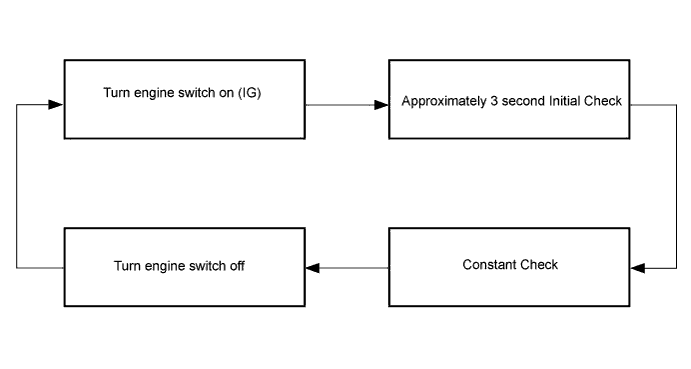

PRE-CRASH SAFETY SYSTEM > DIAGNOSIS SYSTEM |
| INITIAL CHECK |
The initial check occurs when the engine switch is off for more than 2 seconds, and then turned on (IG). The initial check consists of the pre-crash safety system diagnostic check which lasts approximately 3 seconds.
If a malfunction is detected during the initial check, the multi-information display displays "Check PCS System" or "PCS Not available now".
| Warning Message | Detail | DTC | PCS Warning Indicator |
| Check PCS System | This message appears when the seat belt control ECU detects a system malfunction | DTC is output | ON |
| PCS Not available now | This message appears when the seat belt control ECU is in the fail-safe mode | DTC is not output | Blinking |
| CONSTANT CHECK |
After completing the initial check, the pre-crash safety system will become operational. Then, the diagnosis circuit will perform a constant check to check that there is not a system malfunction.
If a malfunction is detected during the constant check, the multi-information display displays "Check PCS System" or "PCS Not available now".
